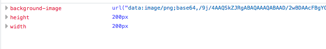
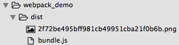
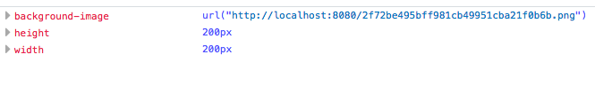
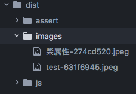

webpack(2) - 加载器
使用webpack本身 , 只是实现了js文件的集中管理 , 并且使用commonJS风格进行模块化管理
但是实际的前端开发当中还会用到各种的资源文件 , 比如css , 图片文件 , 字体文件等等
要实现对这些资源文件的统一管理 , 就要用webpack配合各种加载器来实现
css-loader 与 style-loader
css-loader是用于在JS当中加载CSS文件
style-loader是用于将CSS文件的样式加载到页面当中
安装
npm install css-loader style-loader --save-dev配置加载器
webpack.config.js
module.exports = {
//.... (其他配置项)
module: {
//加载器配置
//告诉webpack每一种类型文件都需要使用什么加载器来处理
loaders: [
{ test: /\.css$/, loaders: ["style-loader","css-loader"] }
]
}
}test当中是对文件名的正则匹配 , 符合匹配的会使用对应的加载器去加载
在JS当中引入css样式
编写一个css文件 , 在js当中直接引入即可require("./style/base.css");执行webpack打包操作

url-loader
这是适用于图片文件的加载器 , 它可以将图片文件转化为base64编码 , 直接嵌入到JS当中
安装
npm install url-loader --save-dev配置文件匹配
module.exports = { //.... (其他配置项) module: { loaders: [ { test: /\.css$/, loaders: ["style-loader","css-loader"] }, { test: /\.(png|jpg|jpeg|gif)$/, loader: "url-loader" } //图片资源的加载器 ] } }在JS当中直接使用图片资源
const picture = require("./images/test.jpeg");
// img元素
document.getElementById("testImg2").src = picture;
// div元素
var img3 = document.getElementById("testImg3");
img3.style.backgroundImage = "url(" + picture + ")";
img3.style.width = 200;
img3.style.height = 200;- 执行打包后获得的结果如下

如果在css文件当中引用图片文件 , 效果也是一样的
file-loader
任何的资源文件都可以使用file-loader进行加载 , 也包括图片文件
只不过使用这个加载器加载的文件 , 不会对文件内容任何处理 , 而是直接把文件放入到打包之后的指定目录当中
webpack.config.js
module.exports = {
entry: {
index : './src/entry.js'
},
output: {
path: __dirname+"/dist",
filename: 'bundle.js'
},
module: {
loaders: [
{ test: /\.css$/, loaders: ["style-loader","css-loader"] },
//配置资源文件所对应的文件类型(正则)
{ test: /\.(png|jpg|gif|svg|woff|woff2|ttf|eot)$/, loader: "file-loader" }
]
}
};比如在css文件当中引用了一个图片文件
body {
background-color: #ccc;
}
#testImg {
width:200px;
height:200px;
background-image: url("../images/test.png");
}执行打包之后就会根据图片的哈希码作为命名在输出目录下生成一个图片文件

并且对应的css样式也会被替换

补充 :
在项目当中 , 我们通常把较小的图片文件转化为base64编码 , 较大的图片文件则直接保留原文件
避免js文件太过臃肿 , 加载缓慢
url-loader提供了一个limit参数 , 可以对图片的大小进行限制 ( 单位是字节 ) , 小于该值的由url-loader处理
大于这个值的 , 则直接交给file-loader处理
module.exports = {
//...(其他配置项)
module: {
loaders: [
{ test: /\.css$/, loaders: ["style-loader","css-loader","postcss-loader"]},
{ test: /\.(png|jpg|jpeg|gif)$/, loader: "url-loader" , query :{limit:20000,name:"[name]-[hash:8].[ext]",publicPath:"../images/",outputPath:"images/"}},
//会将图片转化为base64编码直接写入到js文件当中
// { test: /\.(png|jpg|jpeg|gif|svg|eot)$/, loader: "file-loader", query :{name:"images/[name]-[hash:8].[ext]"}},
{ test: /\.(svg|eot)$/, loader: "file-loader", query :{name:"[name]-[hash:8].[ext]",publicPath:"../fonts/",outputPath:"fonts/"}},
//注意 : file-loader配置的文件类型匹配不要和url-loader冲突
]
}
};此时传递给url-loader的参数 , 如果资源文件被交给了file-loader来处理 , 这些参数也会传给file-loader
name就属于给file-loader去用的参数 , 代表打包以后文件的命名规则
打包后的结果如下



昵称：
退出
[Ctrl+Enter快捷键提交]
【推荐】群英云服务器性价王，2核4G5M BGP带宽 68元首月！
【粉丝福利】Web前端基础到高级在线直播教学
【福利】阿里云免费套餐升级，更多产品，更久时长
· 股权已质押97% 贾跃亭下一步靠土地解围？
· Google Home或Amazon Echo值得买吗？
· 扎堆IPO？互联网金融将迎赴美上市热潮
· 同程旅游旗下航空公司同程捷运已成立，主运营基地在南通
· 苹果、特斯拉等公司对加州政府提要求：放宽无人驾驶汽车测试规定
» 更多新闻...
· 程序员，如何从平庸走向理想？
· 我为什么鼓励工程师写blog
· 怎么轻松学习JavaScript
· 如何打好前端游击战